字体设计
设计说明：以2017年数字为创作原型，利用添加云水谣古楼屏风、壁橱、门窗中提取雕刻云纹、花纹为元素，再次与数字结合进行创作，表达对2017年飞龙成云、花好月圆的美好憧憬。
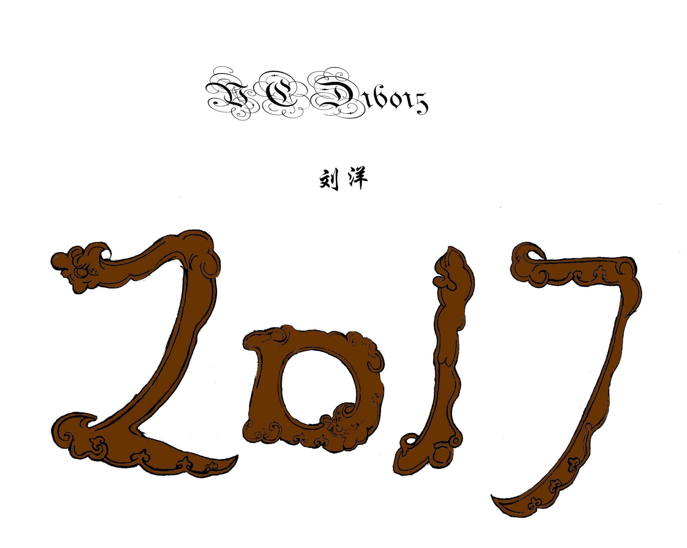图形创意
设计说明：顺风耳也要织毛衣
创意主题以“情理之中，意料之外”为选题，顺风耳，表意指“能够听到随风而来之声音的耳朵”，顺风耳也是由人演变过来，是人就会知酸甜苦辣、世界冷暖是情理之中，虽然会感觉冷暖却会织毛衣是出人意料。
设计说明：蜘蛛也要用雷达
创意主题以“情理之中，意料之外”为选题，蜘蛛依靠蜘蛛脚上有刚毛，发出声音时有空气震动，它可以感觉得到，使用雷达可以加强震动是情理之中，人使用的工具东西赋予动物，使蜘蛛更加生动形象却是意料之外。
招贴设计
设计说明：印象派：Impressionist 印象派绘画兴起于19世纪60年代把"光"和色彩" 作为绘画追求的主要目的。代表作莫奈《 日出· 印象 》 艺术家们运用色彩的分割理论即分割法 作画。以原色 小点 直接点在画面上作画保持色 彩本身的纯度和明度， 使画面色调鲜明而活泼。 短笔触点描技法也称"点彩派"
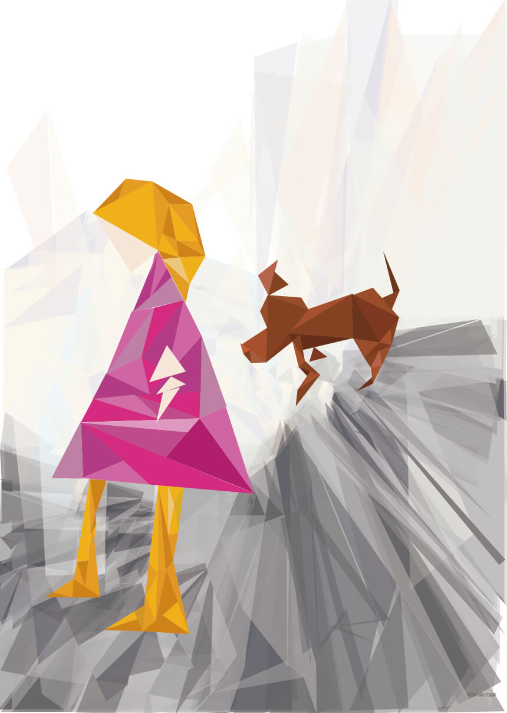设计说明：立体派：Cubism 立体派是西方现代艺术史上的一个运动和流派。又称为立方主 义。代表作《亚威农少女》毕加索，艺术家们用全方位观察将 碎裂物体解析、再由主观意识重新整理拼合，形成物体的背景 和主体各个角度交错迭放创造二维空间的三维空间错觉之美。
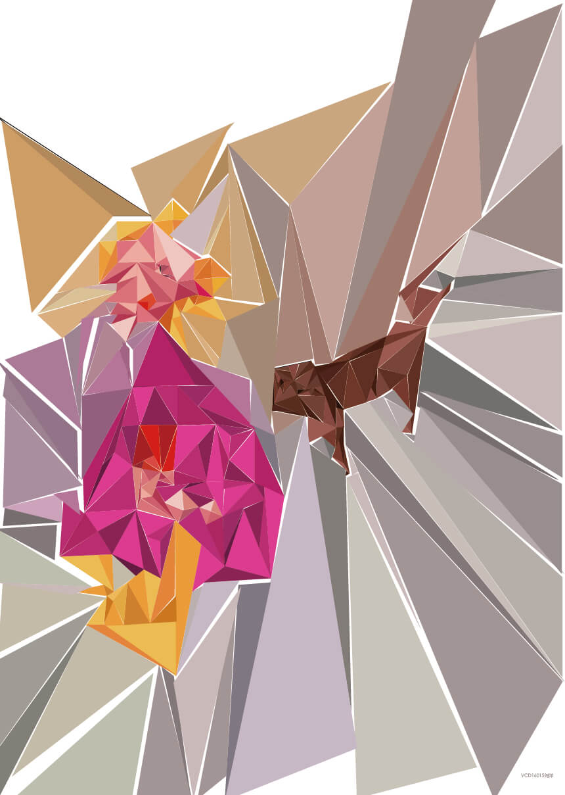设计说明：风格派：DE Sti jl 风格派又称新造型主义画派，由蒙德里安等人 在荷兰创立。代表作《红、蓝、黄构图》。艺 术家们追求宁静、和谐、有秩序、造型中拒绝 使用具象元素，认为艺术不需要表现个性和特 殊性。主张艺术语言的抽象化和单纯性，表现 数学精神。
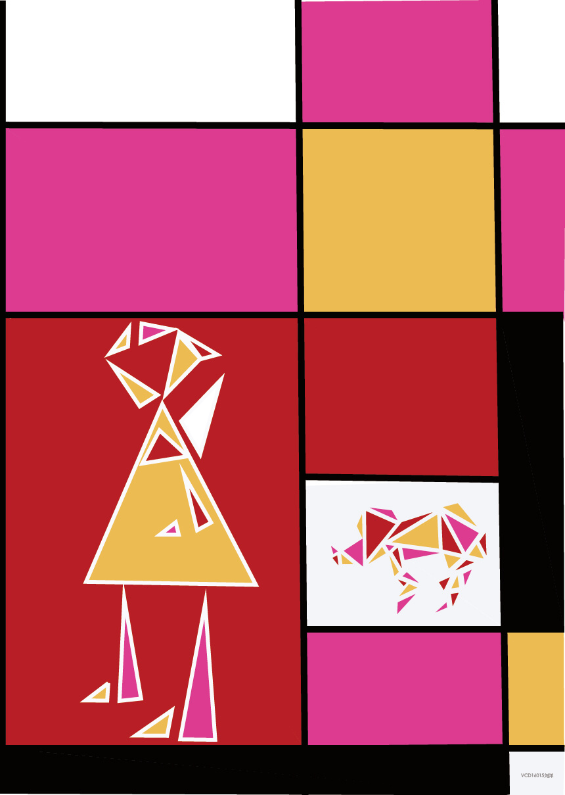设计说明：未来派：Futurism 未来派也称未来主义绘画，马里奈缔于 1909年 2月 在《费加罗报》上发表了《未来主义的创立和宣言》 一文，标志着未来主义的诞生。代表作《 拴着皮带 的狗 》 艺术家们反对传统艺术形式主张以运动的线 条 、形状 和色彩来表现骚动和喧嚣的现代生活，赞 扬机械文明的 运动、速度和时间 要素加入画面呈现 四维空间。
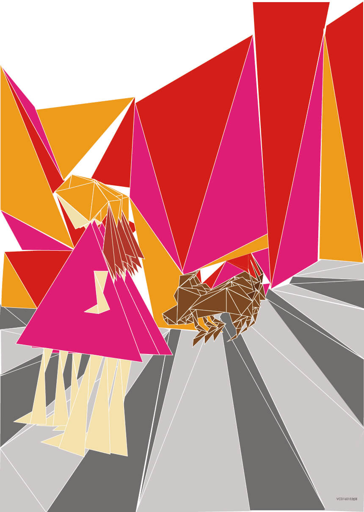文创设计
创意说明：首先，根据回鹘式蒙古文为创意源泉，回鹘 式蒙古文有悠久的陈酿，也有独特的字体魅力。其次，回鹘式蒙古字母是在一个字的不同位置都有不同的形状大部分的音位分为字首、字中、字尾作字中型的字母有一纵线以联结整个字的特点。利用蒙古特有习俗与动物部位「鹰的翅膀、红山玉龙、蒙古马的马蹄、弓箭」与蒙古文字相结合使文字寓意与动物的形象首尾呼应又相得益彰。最后，希望通过蒙古文寓意“祝你成功”送 给每追梦人.
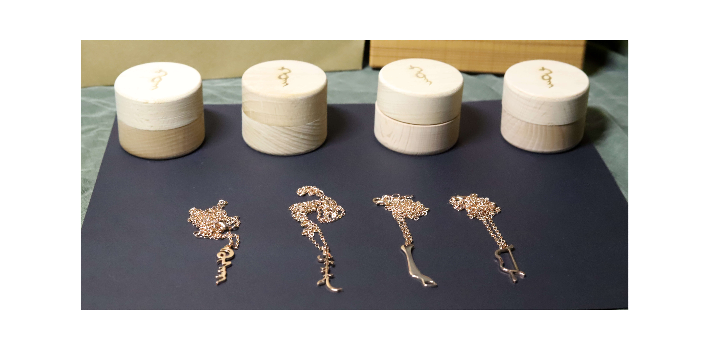 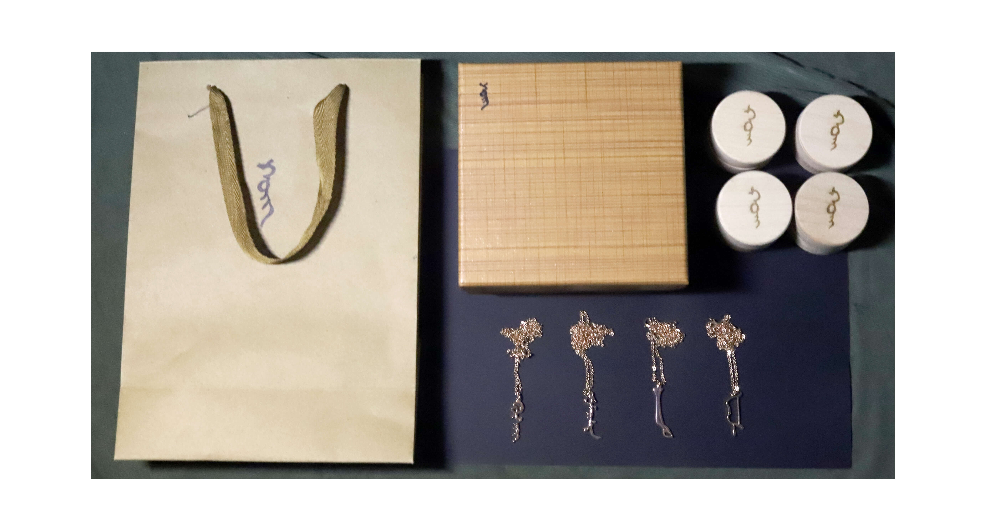 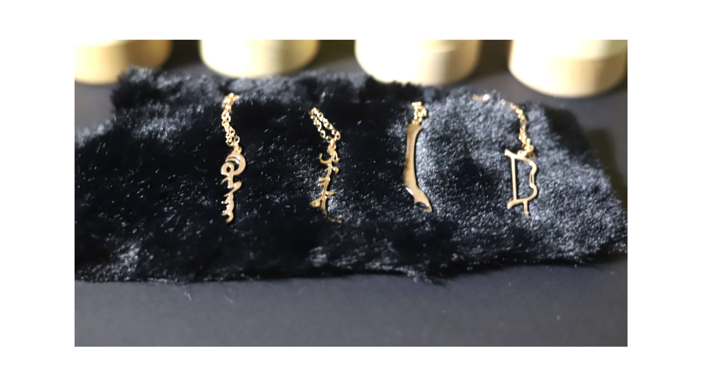 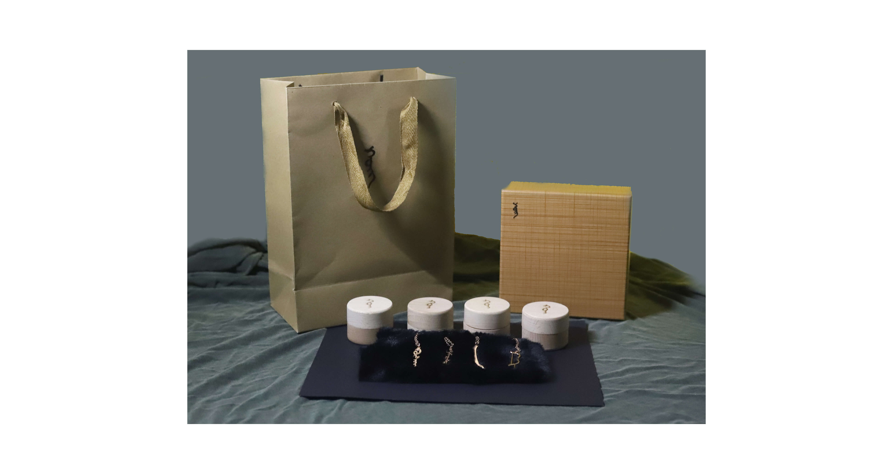创意说明：给嘉士伯啤酒重新制作啤酒包装
设计取材于：三位一体天主教—圣父、圣子、圣神，为主要人物体现信仰为天，提取罗丹《三个影子》雕像表达：一种不可克服的欲望，对智慧和光明的追求、婴儿是天真、毒舌为邪恶、卷草纹为一个构建的温馨的家园、来表达人们遇到挫折，信仰自赎。 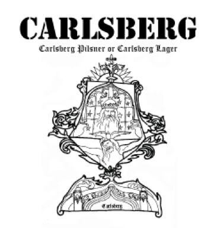 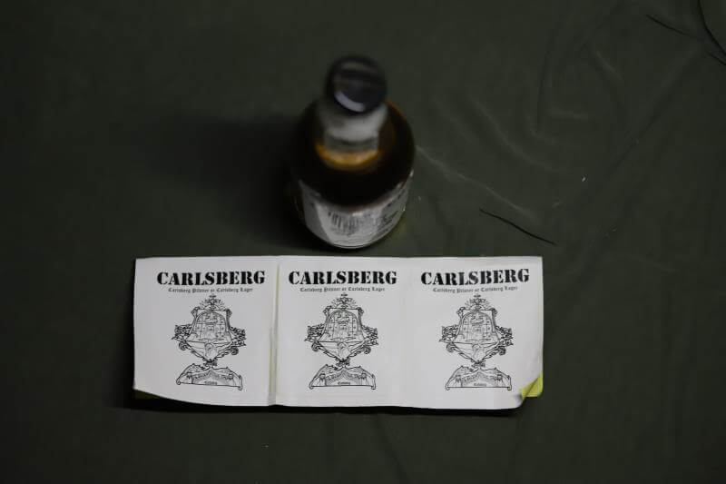 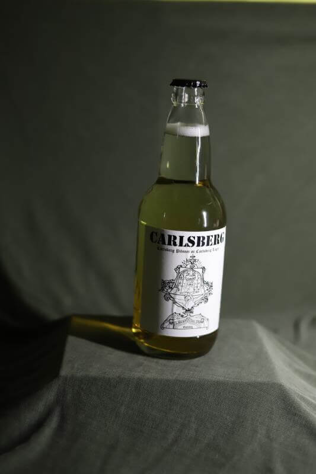 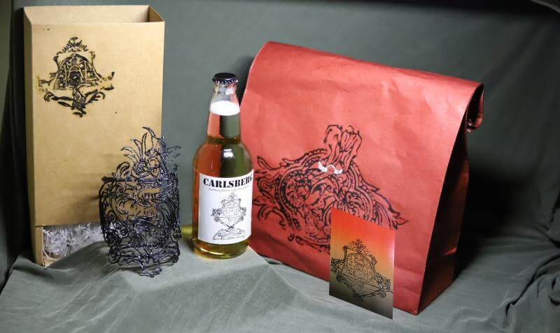
摄影作品
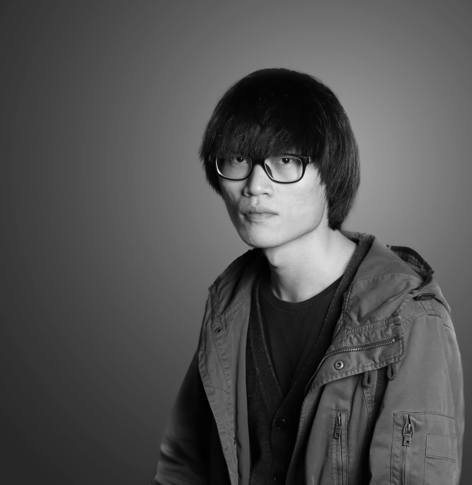 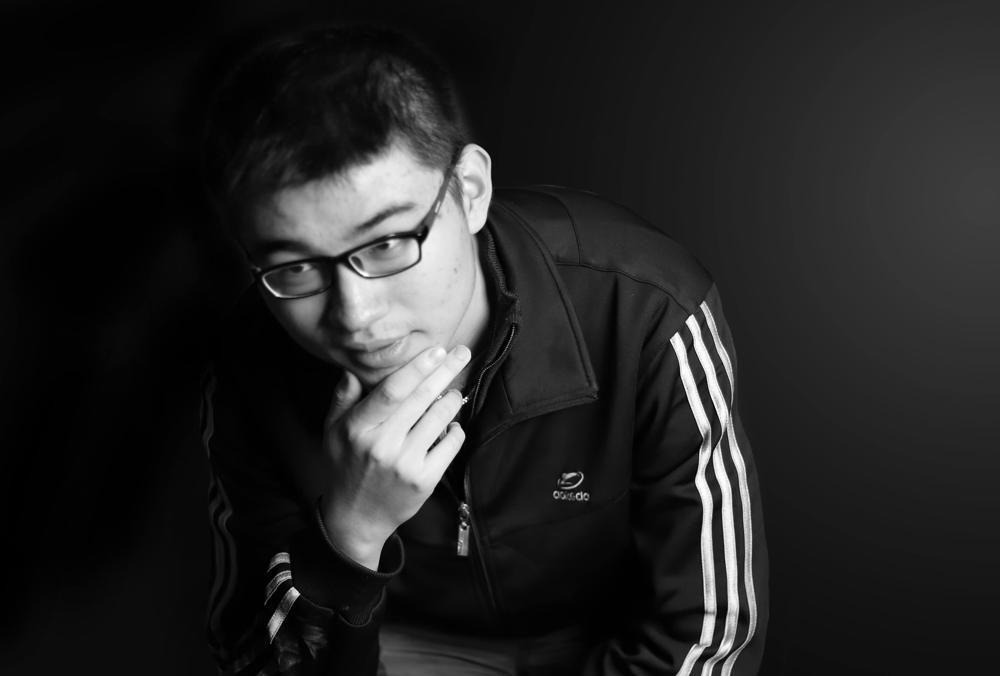 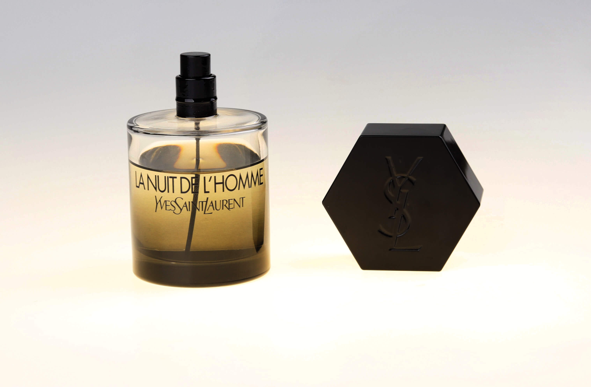 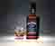